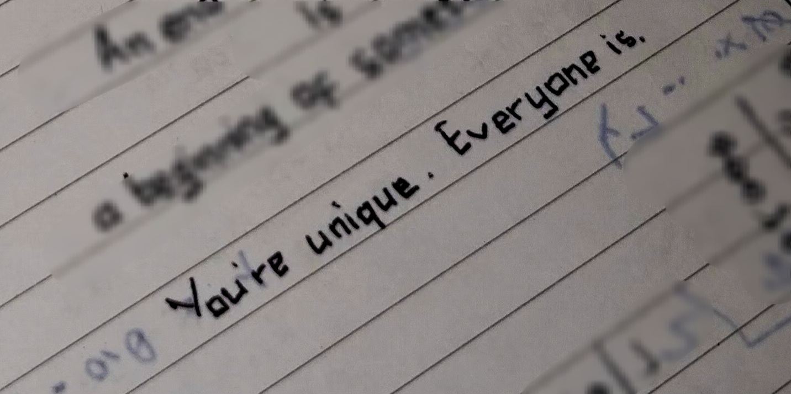

.png)
"You're Unique, Everyone Is."

Over a month ago, I cleaned up some space in my room—basically my desk that’s full of papers and stuffs I refuse to throw away. One of my main focuses was the stack of old school papers—from elementary to high school. I sorted those pieces while taking my time to have a moment of nostalgia. Some were my exam papers from years ago, tasks I did back then, and some were papers full of scribbles and calculation notes.
Although I genuinely found every single one to be interesting as it was full of nostalgia, I was so much drawn to a piece of double folio paper. I proceeded to take a closer and longer observation on that one paper. Seemingly, it was a scratch paper I used as calculation note during a middle school exam. But amid those scribbled calculations, I had written random quotes or sayings that I loved—and still do.
One of them was inspired from a quote by Margaret Mead that I initially read on a quiz game app. The full quote was, “Always remember that you are absolutely unique. Just like everyone else.” To be honest, ever since the first time I read it on that game, I’ve always thought it was such a powerful quote. As a person who every once in a while, feels less ‘special’ myself, these words straightforwardly gave me courage.
The quote evokes the notion that every single person is different—in terms of both their inner self and the life they live. But at the same time, I feel like it has a little twist. The fact that everyone is unique also gives us—as human beings—one thing in common: uniqueness. It's like saying everything is different but that’s what makes them the same: they’re all different. Personally, to me, this twist adds a deeper meaning to the quote. Then when we think about it, I believe we’ll all come to an agreement that it is certainly true.
The quote may sound rather simple, yet it gives an enormous reassurance to someone like me. It makes me realize that no matter how ‘ordinary’ or ‘typical’ I think I am—in fact, I’m still one of a kind. This reassurance felt like an embrace, but on top of that, a quiet sense of humanity was there as well—or at least that’s how I can express my feeling about it right now.
At the end of the day, every word of the quote tells me that there’s no one out there who’s exactly like me—and that’s all I need to feel special. Even though it doesn’t always show as much as some others, the uniqueness is still there, hence I am special in my own way. And more importantly, everyone better feels that way. I suppose I’m not the only one who has ever felt ‘non-special’ in certain ways, so let me tell you this as well: you are special.
Ps: the game app I mentioned was called cryptogram, by the way. I think I even took a screenshot or took a note on my phone of that quote (and some others from the same game that I felt drawn to). Love that game!